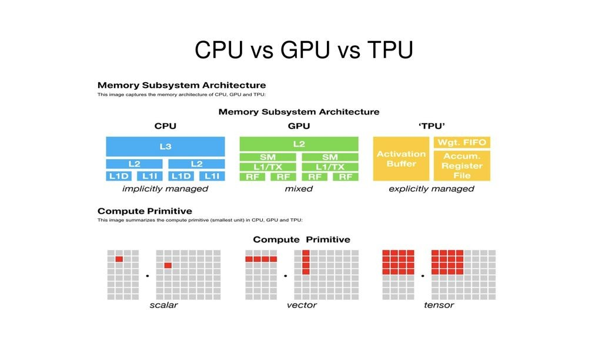

1. Unidades de Procesamiento Neural (NPUs)
Las NPUs (Neural Processing Units) son componentes especializados dentro de los procesadores que están diseñados para acelerar las operaciones de redes neuronales profundas (Deep Learning) y otros algoritmos de IA. Estos chips están optimizados para realizar cálculos que requieren una gran cantidad de operaciones matemáticas paralelas, como la multiplicación de matrices y la acumulación de resultados.
Las NPUs son comunes en dispositivos como teléfonos inteligentes, automóviles autónomos y dispositivos IoT avanzados. Están optimizadas para tareas de inferencia de IA, es decir, ejecutar modelos entrenados de IA en tiempo real, como el reconocimiento de imágenes y la visión por computadora, donde se necesita un procesamiento de IA en tiempo real con bajo consumo de energía.
Ejemplos de NPUs:
- Apple Neural Engine: Integrado en los chips A-series y M-series de Apple, como el A14 o M2, este componente permite el procesamiento rápido de tareas de IA, como el reconocimiento facial, la fotografía computacional y el procesamiento de lenguaje natural.
- Huawei Kirin NPU: En los procesadores Kirin de Huawei, la NPU permite un alto rendimiento en tareas como la mejora de imágenes y la traducción en tiempo real.
Entre las ventajas que podemos encontrar en este tipo de procesadores están:
- Eficiencia energética: Las NPUs están diseñadas para ser eficientes en términos de consumo de energía, lo que las hace ideales para dispositivos portátiles.
- Integración: Muchas veces están integradas dentro de los chips de smartphones (como los de Qualcomm o Huawei) para realizar tareas de IA sin necesidad de conectarse a un servidor.
2. Tensor Processing Units (TPUs)
Las TPUs son procesadores desarrollados por Google específicamente para tareas de aprendizaje automático (Machine Learning) y aprendizaje profundo (Deep Learning). Aunque las TPUs son más comunes en centros de datos, Google también ha integrado versiones optimizadas de TPUs en dispositivos móviles, como los teléfonos Google Pixel.
Las TPUs están optimizadas para realizar los cálculos que las redes neuronales necesitan, particularmente los modelos de aprendizaje profundo basados en tensores, lo que les permite realizar tareas de IA a velocidades mucho mayores que las CPU o incluso las GPU tradicionales.
Específicamente, se diseñaron para acelerar las operaciones relacionadas con el procesamiento de tensores (matrices de datos multidimensionales) que se utilizan en las redes neuronales profundas. Están optimizadas tanto para la inferencia como para el entrenamiento de modelos de IA.
Las TPUs están diseñadas para realizar cálculos masivos de matrices, que son esenciales en operaciones de aprendizaje profundo, como las multiplicaciones de matrices de grandes dimensiones. Son extremadamente eficientes para realizar operaciones de álgebra lineal que dominan las redes neuronales, en particular las redes neuronales convolucionales y las redes neuronales recurrentes.
A diferencia de las NPUs, las TPUs están más enfocadas en el procesamiento en la nube y en centros de datos, ya que requieren gran capacidad de cómputo. Están diseñadas para cargas de trabajo de IA a gran escala, como el entrenamiento de modelos de IA en grandes bases de datos o la inferencia de modelos complejos en tiempo real.
Ejemplos:
- TPU v4 de Google, utilizada en sus centros de datos para tareas de entrenamiento de IA masivas.
- Servicios de Google Cloud TPU, que permiten el acceso remoto a la potencia de TPUs a través de la nube.
En cuanto a sus ventajas, podemos destacar que:
- Altamente escalables: Google ofrece TPUs en su servicio de Google Cloud para que los desarrolladores de IA puedan usarlas a gran escala en tareas de entrenamiento masivo.
- Optimización para TensorFlow: Están optimizadas para el framework de aprendizaje automático TensorFlow, lo que las hace muy eficientes en tareas de IA dentro del ecosistema de Google.
3. Unidades de Procesamiento Gráfico (GPUs)
Las GPUs (Graphic Processing Units) son tradicionalmente conocidas por manejar el procesamiento de gráficos, pero se han vuelto fundamentales para el entrenamiento de modelos de IA debido a su capacidad de realizar cálculos masivamente paralelos. Las GPU pueden manejar los enormes volúmenes de datos y las operaciones complejas requeridas en el entrenamiento de redes neuronales.
NVIDIA, un líder en el desarrollo de GPUs, ha adaptado sus unidades de procesamiento gráfico para tareas de IA, lanzando productos como CUDA y Tensor Cores que están específicamente diseñados para ejecutar operaciones de IA de manera eficiente.
4. Arquitectura de Procesadores ARM y AI
Los procesadores basados en la arquitectura ARM están cada vez más diseñados para soportar cargas de trabajo de IA. ARM ha desarrollado tecnologías como el Cortex-A y el Cortex-M con soporte integrado para acelerar tareas de IA tanto en dispositivos móviles como en sistemas embebidos.
ARM también está avanzando con el Proyecto Trillium, que incluye la NPU ARM Ethos, diseñada específicamente para aplicaciones de aprendizaje automático, ofreciendo alto rendimiento en la inferencia de modelos de IA.
